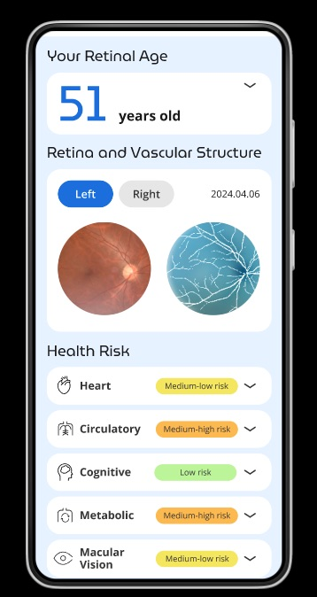
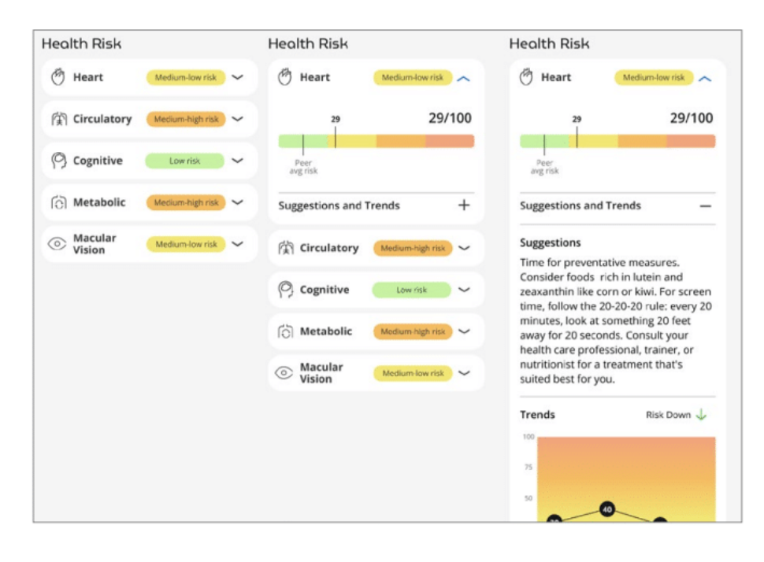
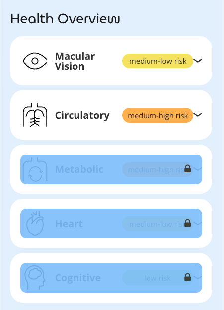

3 Opticare AI – Marrying Innovation with Wellness
3.1 Introduction: Technology Meets Wellness
In today’s fast-evolving health and wellness landscape, technology is transforming the way professionals assess, monitor, and improve patient health. At the forefront of this transformation is the Opticare AI fundus camera, an innovative tool that combines cutting-edge imaging technology with the power of artificial intelligence (AI). This chapter explores how Opticare AI bridges the gap between traditional wellness practices and state-of-the-art health assessment, enabling practitioners to elevate their services while enhancing patient outcomes.
The eye, often called the “window to the soul,” is also a window to health. By analyzing the retina, wellness professionals can gain insights into systemic health, offering a non-invasive, painless approach to health assessment. For practices seeking to attract tech-savvy, health-conscious clients, the Opticare AI camera is a game-changer.
3.2 Reports
Opticare AI reports stem from the device’s high-resolution fundus imaging capabilities combined with deep learning algorithms. The reports are generated quickly after the imaging process and summarize a patient’s potential health risks in areas such as circulatory, cognitive, metabolic, and cardiovascular health, as well as specific eye-related health markers. The technology’s focus on ease, speed, and comprehensive metrics ensures these reports are both actionable and accessible for health and wellness professionals.

Health Dimensions Analyzed in Opticare AI Reports
Macular Vision Health • This segment assesses the likelihood of eye health issues. Recommendations include general eye care habits such as using UV-protective sunglasses and following the 20-20-20 rule to reduce digital eye strain .
Circulatory Health • By analyzing vascular patterns in the retina, the reports help identify risks associated with circulatory issues. Recommendations may involve exercise regimens, dietary adjustments, and stress management techniques like yoga .
Cognitive Health • Retinal imaging can provide early indications of cognitive health risks, offering an opportunity to implement brain-healthy diets, cognitive exercises, and mindfulness practices .
Metabolic Health • Insights into glucose regulation and metabolic conditions are provided. Lifestyle changes, such as balanced meals with low-carb vegetables and consistent exercise routines, are often part of the suggested interventions .
Cardiovascular Health • Cardiovascular risk assessments are included, with recommendations emphasizing heart-healthy diets and physical activity

Providers can choose to make some reports optional, viewable only when unlocked.

3.3 Features of the Opticare AI Fundus Camera
The Opticare AI Fundus Camera is a state-of-the art imaging device with numerous advanced features, even without the AI analysis software.
The Opticare AI fundus camera (model AI-FD16aF) represents a non-mydriatic retinal imaging device. The term non-mydriatic refers to the ability to capture retinal images without pharmacological pupil dilation, a significant factor in operational efficiency. The device features a compact form factor with dimensions of 297 × 253 × 125 millimeters and a mass of 2 kilograms, making it substantially lighter than traditional fundus cameras, which typically range from 20-35 kg.
The optical system implements a 40-degree field angle, positioning it in the standard range for non-mydriatic fundus cameras, which typically span 30-45 degrees. A minimum pupil diameter requirement of 2.8 mm compares favorably to industry standards of 3.0-3.3 mm, potentially enabling successful image capture in a broader range of ambient lighting conditions.
The resolution performance varies across the field of view, with central field resolution achieving ≥ 60 line pairs per millimeter (lp/mm), mid-field resolution reaching ≥ 40 lp/mm, and peripheral resolution maintaining ≥ 25 lp/mm. This gradual decrease in resolution from center to periphery follows the characteristic pattern of wide-field optical systems. The line pairs per millimeter measurement represents the ability to resolve alternating black and white lines of specified width, serving as a standard metric in optical system evaluation.
At the heart of the camera lies a 12-megapixel digital sensor. While megapixel count alone does not determine image quality, this resolution provides approximately 4000 × 3000 pixels, sufficient for detecting subtle retinal features. The manufacturer has not specified the sensor type and pixel size specifications.
The diopter adjustment range extends from -15D to +15D, accommodating a wide range of refractive errors and covering approximately 95% of the general population’s refractive states. This range matches or exceeds most commercial fundus cameras currently available.
The device employs a sophisticated dual illumination system. The infrared LED system operates in the 770-930 nanometer spectral range, primarily handling focus and alignment functions. This infrared illumination remains invisible to human vision, thereby minimizing pupillary response during operation. The white LED flash system operates within a color temperature range of 4500-6700 Kelvin, matching daylight color temperature of approximately 5500K and enabling accurate color rendition of retinal features.
Safety features built into the illumination system limit exposure times, with infrared light maximum safe exposure exceeding 600 seconds and pulsed light safety threshold set at 20 exposures. These limitations comply with ISO 15004-2:2007 standards for ophthalmic instruments.
The device incorporates multiple interface options for maximum flexibility. The primary USB interface handles data transfer and device control, maintaining compatibility with both USB 2.0 and 3.0 standards. An HDMI output enables real-time preview capability and external display connection with full HD resolution support.
Wireless connectivity includes both WiFi and 4G cellular support. The WiFi system operates on both 2.4 GHz and 5 GHz bands, supporting 802.11b/g/n and 802.11ac standards respectively, with channel bandwidth options of 20, 40, and 80 MHz. All data transmission occurs via HTTPS protocol, ensuring security.
The system stores images in JPEG compression format, supporting both external storage and cloud upload capabilities with automated backup options.
Power requirements include input voltage ranging from 100-240V AC at 50/60 Hz frequency, with maximum input current of 0.8A. The power supply maintains Class II isolation standards with Type B applied part protection. Environmental operating parameters specify a temperature range of +5°C to +40°C, relative humidity between 10-90% (non-condensing), and atmospheric pressure from 860-1060 hPa. The device carries an Installation category II rating and Pollution degree 2 classification.
Storage conditions allow for a broader temperature range of -40°C to +55°C, with relative humidity not exceeding 90% and the same atmospheric pressure requirements as operating conditions.
3.3.1 EMC and Safety Classifications
Electromagnetic compatibility meets Group 1 Class B equipment standards, complying with YY 0505-2012 and maintaining RF emissions within GB 4824-2019 limits. The device achieves Class A harmonic emissions ratings and demonstrates compliance with GB 17625.2 for voltage fluctuations.
Safety classifications include Class II electrical safety rating, Type B patient protection, IPX0 ingress protection, and continuous operation rating. The device incorporates comprehensive EMC protection with immunity to electrostatic discharge at ±6 kV contact and ±8 kV air, electrical fast transients at ±2 kV for power lines, surge immunity at ±1 kV line-to-line, and power frequency magnetic field immunity at 3 A/m.
These comprehensive specifications position the device within typical parameters for medical-grade imaging equipment, though specific performance characteristics would require independent verification for particular applications.
3.4 Why Choose Opticare AI?
The integration of retinal imaging technology into wellness practices presents several distinct operational and practical advantages worth examining in detail. These benefits emerge from both the technical capabilities of the system and its impact on practice operations.
3.4.1 Non-Invasive Assessment Experience
The non-invasive nature of retinal imaging addresses a significant barrier many individuals face when seeking wellness assessments. Traditional health screenings often involve blood draws, tissue samples, or other invasive procedures that can create anxiety and resistance among clients. The simple, photographic nature of retinal imaging eliminates these concerns.
Consider the experience of Julia Chen, a yoga instructor in Portland, Oregon. Despite her commitment to personal wellness, Chen had historically avoided health assessments due to severe anxiety about blood draws. When her naturopathic practitioner introduced retinal imaging as an assessment option, Chen found the process remarkably comfortable. “The whole experience felt more like having a photograph taken than a medical procedure,” she noted. This accessibility has enabled her to maintain regular wellness monitoring without the stress associated with traditional screening methods.
The psychological impact of non-invasive screening extends beyond individual comfort. Practitioners report that clients are more likely to follow through with regular monitoring when the assessment process feels less clinical and more approachable. This increased compliance leads to better long-term engagement with wellness programs and more consistent monitoring of health status over time.
3.4.2 Operational Efficiency
The speed and efficiency of retinal imaging create significant operational advantages for wellness practices. The entire imaging process typically requires less than five minutes, from initial positioning to image capture and analysis. This rapid assessment capability allows practitioners to integrate comprehensive screening into regular appointments without extending consultation times significantly.
Dr. Sarah Martinez, a naturopathic physician in Denver, describes how this efficiency has transformed her practice workflow: “Previously, comprehensive health assessments required multiple appointments and several days of waiting for test results. Now we can capture important health indicators during the initial consultation, allowing for more immediate and informed discussions about wellness strategies.”
The immediate availability of results also streamlines the consultation process. Rather than scheduling follow-up appointments to discuss findings, practitioners can review results and develop wellness strategies during the same session. This immediacy enhances client engagement and reduces the likelihood of missed follow-up appointments.
3.4.3 Practice Differentiation
The adoption of advanced assessment technology can distinguish a practice in increasingly competitive wellness markets. However, this differentiation extends beyond mere technological novelty. The ability to provide immediate, data-driven insights into health status represents a meaningful enhancement to service delivery.
Dr. Michael Thompson, a chiropractor in Austin, has observed how this capability influences client perceptions: “When clients see that we’re investing in advanced assessment tools, they recognize our commitment to providing comprehensive care. It’s not just about having new technology – it’s about offering better insights and more informed guidance.”
This differentiation proves particularly effective in markets with high concentrations of wellness practitioners. The ability to offer unique assessment capabilities can help establish a practice as a leader in preventive wellness care, attracting both new clients and referrals from other healthcare providers.
3.4.4 Assessment Versatility
The broad analytical capabilities of retinal imaging make it relevant across various wellness disciplines. Rather than focusing solely on eye health, the technology provides insights into multiple aspects of systemic health, making it valuable for practitioners ranging from nutritionists to fitness professionals.
Jennifer Parker, a functional medicine practitioner in Chicago, emphasizes this versatility: “The information we gather through retinal imaging helps inform various aspects of our wellness programs, from nutritional recommendations to stress management strategies. It provides another layer of insight that complements our other assessment tools.”
The technology’s ability to monitor changes over time proves particularly valuable for tracking the effectiveness of wellness interventions. Regular imaging can provide objective indicators of how lifestyle modifications and wellness programs impact overall health status, helping practitioners refine their approaches and demonstrate program effectiveness to clients.
3.4.5 Client Education and Engagement
The visual nature of retinal imaging creates powerful opportunities for client education. The ability to show and explain health indicators directly from retinal images helps clients better understand their wellness status and the potential impact of various lifestyle factors.
Mark Davidson, a wellness coach in Seattle, notes how this visual component enhances client communication: “When clients can see actual images and understand how they relate to their health status, it makes our discussions about lifestyle changes more concrete and meaningful. It transforms abstract health concepts into tangible realities they can understand and act upon.”
This enhanced understanding often leads to better client engagement with wellness programs. When clients can visualize aspects of their health status, they typically demonstrate greater motivation to implement and maintain recommended lifestyle changes.
The combination of these advantages creates a compelling case for integrating retinal imaging into wellness practices. While the technology itself represents a significant advance in assessment capabilities, its real value emerges from how it enhances client care, practice efficiency, and overall service delivery. These benefits, observed across various wellness disciplines, suggest that retinal imaging can play a valuable role in contemporary wellness practice.
Case Study: Transforming Patient Care at Horizon Wellness Spa
Horizon Wellness Spa, located in Boulder, Colorado, is a thriving center for holistic health. Owned by Dr. Elena Martinez, a licensed chiropractor and naturopath, the spa integrates traditional practices with modern technology. In 2023, Dr. Martinez introduced the Opticare AI fundus camera to her practice, and the results were transformative.
One of her clients, James, a 54-year-old avid cyclist, visited the spa for a wellness consultation. While he appeared healthy, the Opticare AI scan revealed subtle changes in his retinal vasculature, suggesting early-stage cardiovascular risk. Armed with this information, Dr. Martinez referred James to a cardiologist, who confirmed mild hypertension and recommended lifestyle modifications. James credits the timely intervention to Dr. Martinez and the Opticare camera.
This story, while fictional, illustrates how Opticare can enhance patient care, enabling practitioners to identify risks before they manifest as symptoms.
3.5 Professional Integration and Addressing Implementation Concerns
The integration of retinal imaging technology into wellness practices presents both opportunities and challenges for practitioners. Understanding how to effectively implement this technology while maintaining appropriate professional boundaries requires careful consideration of several key aspects.
3.5.1 Practice Enhancement
Wellness practitioners increasingly face market pressures to differentiate their services while maintaining high standards of care. The addition of retinal imaging technology can enhance practice capabilities in several meaningful ways. For instance, practitioners in Portland’s competitive wellness market have reported that offering advanced assessment options helps establish their practices as forward-thinking and comprehensive in their approach to client care.
Dr. Rachel Martinez, a naturopathic physician in Denver, describes how retinal imaging has influenced her practice: “The ability to offer detailed health assessments using non-invasive technology has helped us attract clients who might otherwise hesitate to seek preventive care. It’s not about replacing traditional methods, but rather expanding our ability to support client wellness goals.”
3.5.2 Financial Considerations
The financial aspects of implementing retinal imaging deserve careful analysis. The initial investment includes not only equipment costs but also staff training and potential modifications to practice space. However, the technology can generate revenue through direct service fees while potentially increasing client retention through enhanced service offerings.
Many practices have successfully integrated retinal imaging into their fee structures. Standard market rates typically range from $75-125 for initial scans and $50-75 for follow-up assessments. Some practitioners include imaging as part of comprehensive wellness packages, while others offer it as a standalone service.
Mark Thompson, a wellness consultant in Minneapolis, shares his experience with the financial aspects: “We conducted a thorough cost-benefit analysis before implementation. The key was determining appropriate pricing that reflected both the value of the service and our market’s dynamics. After six months, the technology had achieved our target return on investment while enhancing our service capabilities.”
3.5.3 Client Education
Perhaps the most significant advantage lies in the technology’s ability to facilitate client education and engagement. The visual nature of retinal imaging creates powerful opportunities for discussing various aspects of health and wellness. Practitioners report that clients better understand and engage with wellness recommendations when they can visualize aspects of their health status.
Jennifer Chen, a holistic health practitioner in Seattle, emphasizes this educational value: “When clients can see actual images related to their health status, it transforms abstract concepts into tangible realities. This visual component has significantly improved our ability to communicate about wellness strategies and lifestyle modifications.”
3.6 Addressing Professional Concerns
The implementation of any new technology naturally raises questions and concerns among professionals. Understanding and addressing these concerns proves essential for successful integration of retinal imaging into wellness practices.
3.6.1 Regulatory Understanding
The regulatory landscape surrounding health assessment tools requires careful navigation. While retinal imaging technology serves as a valuable tool for wellness assessment, practitioners must maintain clear boundaries regarding its use. The technology supports informed discussions about health and wellness but does not replace diagnostic procedures or medical evaluations.
Dr. Michael Davidson, a functional medicine practitioner in Chicago, describes his approach: “We’re very clear with clients about how we use this technology. It’s one tool among many that helps us understand their overall wellness status and track changes over time. We maintain appropriate professional boundaries and refer to medical professionals when indicated.”
3.6.2 Scientific Foundation
The scientific basis for retinal imaging as a wellness assessment tool rests on extensive research linking retinal health to various aspects of systemic health. Numerous peer-reviewed studies have demonstrated correlations between retinal features and general health indicators. However, practitioners should understand both the capabilities and limitations of this technology in the context of wellness care.
Sarah Wilson, a research coordinator at Mountain View Wellness Center, emphasizes the importance of staying current with the scientific literature: “We regularly review new studies and research developments to ensure our use of the technology aligns with current scientific understanding. This helps us provide accurate information to clients while maintaining appropriate professional boundaries.”
3.6.3 Professional Communication
Clear communication about the role of retinal imaging in wellness care proves essential for both professional integrity and client understanding. Practitioners must develop effective ways to explain how this technology supports their wellness services while avoiding any suggestion of medical diagnosis.
James Peterson, a wellness coach in Austin, shares his communication strategy: “We focus on explaining how retinal imaging helps us track various aspects of wellness over time. We emphasize that it’s one component of our comprehensive approach to supporting client health goals, always maintaining clear boundaries regarding its role in wellness assessment.”
3.6.4 Implementation Considerations
Successful integration of retinal imaging requires careful attention to several practical aspects. Staff training proves essential, ensuring all team members understand both the technical operation of the equipment and appropriate communication about its use. Environmental considerations, including proper lighting and space requirements, must be addressed for optimal operation.
Lisa Rodriguez, a practice manager in San Francisco, discusses implementation challenges: “The key to successful integration was thorough planning and staff preparation. We developed clear protocols for everything from appointment scheduling to result discussions, ensuring consistent and professional service delivery.”
3.6.5 Quality Assurance
Maintaining high standards in the use of retinal imaging technology requires ongoing attention to quality assurance. Regular calibration, proper maintenance, and consistent adherence to operational protocols help ensure reliable results and professional service delivery.
Technical specialist Robert Chen emphasizes the importance of quality control: “We’ve implemented comprehensive quality assurance procedures, including regular equipment checks, image quality assessment, and ongoing staff training. This systematic approach helps maintain consistent, professional service delivery.”
3.6.6 Moving Forward
The integration of retinal imaging technology into wellness practices represents a significant opportunity for enhancing client care while maintaining appropriate professional boundaries. Success requires careful attention to implementation details, clear communication protocols, and ongoing commitment to professional standards.
As the field continues to evolve, practitioners must stay informed about technological developments and research findings while maintaining focus on their core mission of supporting client wellness. This balanced approach ensures that retinal imaging technology serves as an effective tool for enhancing wellness care while upholding professional standards and ethical practices.
3.7 The Technical Edge: How It Works
The Opticare AI camera represents a sophisticated integration of optical engineering and artificial intelligence, designed to make retinal examination both accessible and informative. At its core, the system employs non-mydriatic imaging technology, eliminating the need for pupil dilation and its associated discomfort. The camera utilizes infrared LED illumination to capture high-resolution retinal images while maintaining patient comfort throughout the brief examination process.
Once images are captured, the system’s advanced AI algorithms analyze the retinal patterns with remarkable precision. These algorithms, trained on millions of retinal images and validated through extensive research, examine subtle variations in retinal structures and patterns. The analysis draws upon the same powerful neural network technology that drives modern facial recognition and other sophisticated AI applications.
The system then synthesizes this complex analysis into clear, actionable reports. These reports present health metrics in an accessible format that facilitates meaningful discussions between practitioners and their clients. This streamlined approach to result presentation maintains the delicate balance between comprehensive health information and practical utility, enabling wellness professionals to integrate insights effectively into their practice while staying within appropriate professional boundaries.
3.8 Supporting Materials and Resources
To be successful, practitioners need comprehensive support resources when adopting new technology into their practices. Opticare provides detailed training videos and user manuals that cover device operation and maintenance, from initial setup through advanced imaging techniques.
A dedicated customer support team assists with technical issues that may arise during daily operation, helping minimize disruption to patient care. The support includes troubleshooting guidance and practical advice for optimizing device usage.
Integration guides help practitioners incorporate the camera into their existing workflows, addressing key considerations like patient scheduling, record keeping, and result management. These guides draw from experience across various practice settings to provide tested solutions for common implementation challenges.
3.9 Ethical and Professional Considerations
The use of advanced retinal imaging technology carries important ethical and professional obligations for wellness practitioners. Transparency with patients forms the cornerstone of ethical practice - practitioners must clearly communicate the capabilities and limitations of retinal imaging. This includes explaining that while the technology can identify potential health patterns, it does not provide medical diagnoses.
Professional responsibility also demands effective collaboration with traditional healthcare providers. When retinal imaging suggests potential health concerns, practitioners should have established referral pathways to appropriate medical professionals for proper evaluation. This collaborative approach ensures patients receive comprehensive care while maintaining appropriate professional boundaries.
The camera serves as one component in a broader wellness assessment toolkit. Practitioners should integrate retinal imaging insights with other health indicators to develop a holistic understanding of their patients’ wellbeing, rather than treating it as a standalone diagnostic tool. This balanced approach helps maintain professional integrity while maximizing the technology’s benefits for patient care.
3.10 Conclusion: Transforming Wellness Through Technology
The Opticare AI fundus camera represents a bold step forward for wellness practices. By combining cutting-edge imaging with AI-driven analysis, it empowers practitioners to provide high-quality, patient-centered care. The potential of this technology is immense, and its integration into wellness practices signals a future where technology and health intersect seamlessly.